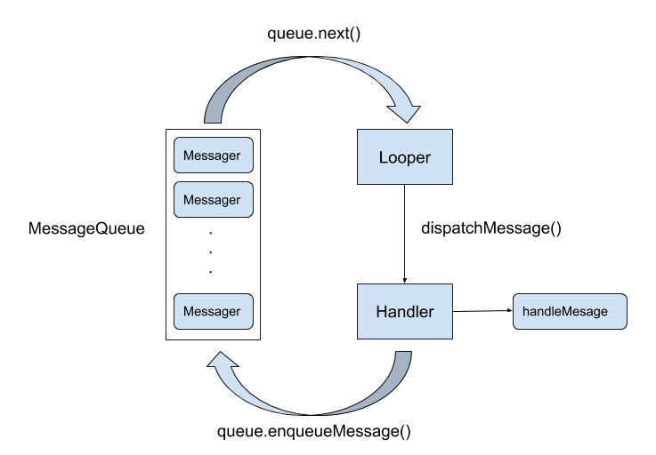

Handler介绍
Handler 是 Android 下异步线程通讯的主要机制，关于 Handler 的简单介绍如下图所示

在 Handler 机制中，主要的参与对象以及关系在上图中已经很清晰了，我这里在简单介绍一下：
Handler异步消息的发送者，也是消息的处理者，但是值得注意的是发送的处理可以在不同线程MessageQueue线程安全的消息队列，线程的变换主要是在MessageQueue中完成Messager异步通信内容的载体Looper通过循环不断的从MessageQueue中获取消息，然后分发给Handler处理，和MessageQueue是一一对应的关系
简单的介绍到此为止，下面开始详细介绍整个消息发送过程。
Handler消息机制
Handler创建
针对 Handler 消息机制，我这边直接从 Handler 构造函数开始解析
public Handler(Callback callback, boolean async) { |
上面这一段代码看似很多，其实就是告诉我们如果想要创建 Handler 就得先有一个 Looper , Looper 是跟线程绑定的，创建 Looper 的同时它也会把 MessageQueue 也一起创建好，我们平时在主线程中的用的时候不要 Looper ,是因为主线程以及帮我们干了。
public final class ActivityThread { |
到现在可以确定线程、Looper 、Handler 、MessageQueue 的关系如下
graph TB |
消息发送
使用 Handler 发送消息可以有多种形式，Handler.sendMessage() 、Message.sendToTarget() 以及类似的一些方法都可以发送消息，但是不管是哪种方法最终都会调用Handler.enqueueMessage() 方法。
private boolean enqueueMessage(MessageQueue queue, Message msg, long uptimeMillis) { |
这个方法也没有做太多逻辑处理，直接调用了 MessageQueue 的 enqueueMessage 方法
boolean enqueueMessage(Message msg, long when) { |
这一段事实上就是一个单链表插入，mMessages 为链表头，如果链表为空则直接把 msg 赋给表头，否则通过循环找到链表最后进行插入。MessageQueue 的消息在 Looper.loop() 来获取并处理的。
public static void loop() { |
loop() 方法主要就是在一个无限循环中不断的通过 next 获取消息，然后使用 dispatchMessage 把消息交回给Handler处理。现在我们回头来看 next 方法是如何获取消息的。
Message next() { |
next 方法的主要逻辑都在一个无限循环内，知道获取到消息才会返回，同时把消息从链表中移除。同时默认获取的是链表头，只有当 msg.target == null 时才会获取链表后第一个同步消息，但是要知道我们通过 Handler 发送的消息 target 都是 Handler 本身，事实上这是消息屏障机制
同步屏障
事实上消息分为同步和异步两种，通过 isAsynchronous 来判断，我们平时使用的一般是异步消息 ,同步消息主要用于页面绘制等对时间敏感的地方，但是在通常情况下即使我们使用 setAsynchronous(true) 来手动设置一个同步消息它也不会生效，MessageQueue 还是会把他当作普通消息处理，只有配合 postSyncBarrier 添加一个同步屏障之后才能使用。
public int postSyncBarrier() { |
postSyncBarrier 是一个隐藏 Api，我们无法调用，但这不妨碍我们分析它，它直接向 MessageQueue 的单链表中头插入了一个 target==null 的消息，也就是上一节 next 方法中的逻辑，当这种情况下，MessageQueue 会忽略所有的异步消息，只获取同步消息，需要调用 removeSyncBarrier(int token) 才能取消这个同步屏障，目前同步屏障主要是在 ViewRootImpl 绘制时使用。